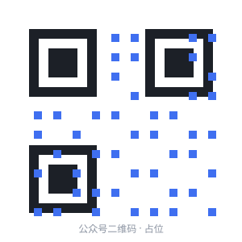
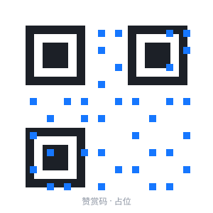

关于我们
生活灵感实验室
把无聊，玩出花。
一个纯静态的生活灵感导航站：生活导航、灵感卡、趣味测试。没有账号、没有跟踪，收藏只存在你自己的浏览器里。

公众号 · 生活灵感实验室更多灵感与更新，扫码关注。

请我喝杯咖啡 ☕如果这个站点帮到了你，欢迎赞赏支持。
二维码为占位图，正式版会替换为真实公众号与收款码。
一个纯静态的生活灵感导航站：生活导航、灵感卡、趣味测试。没有账号、没有跟踪，收藏只存在你自己的浏览器里。

公众号 · 生活灵感实验室更多灵感与更新，扫码关注。

请我喝杯咖啡 ☕如果这个站点帮到了你，欢迎赞赏支持。
二维码为占位图，正式版会替换为真实公众号与收款码。